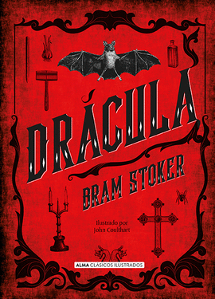
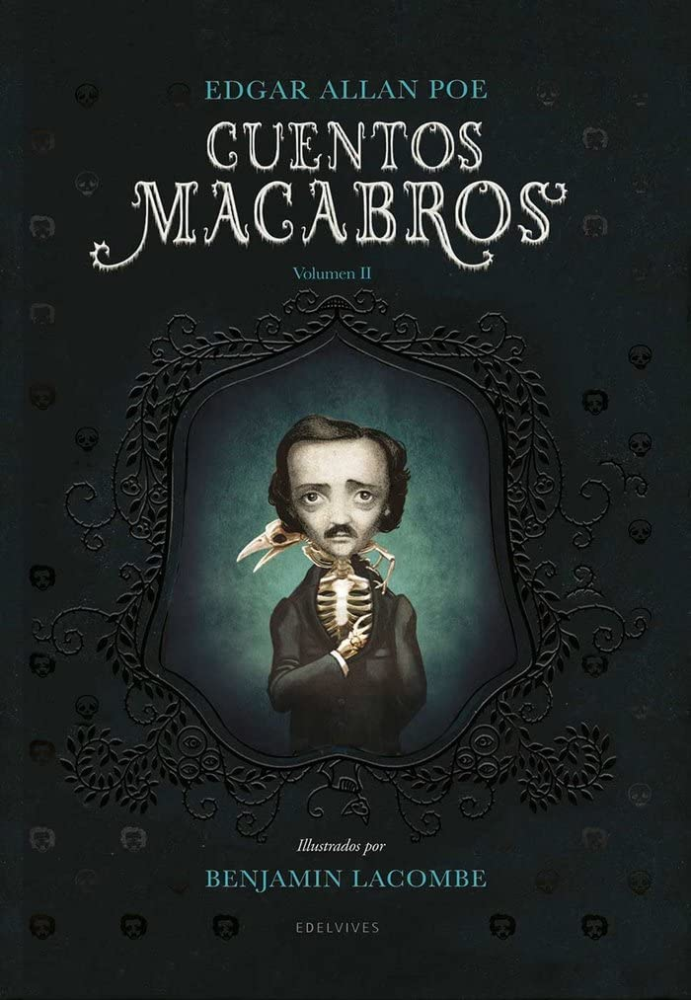
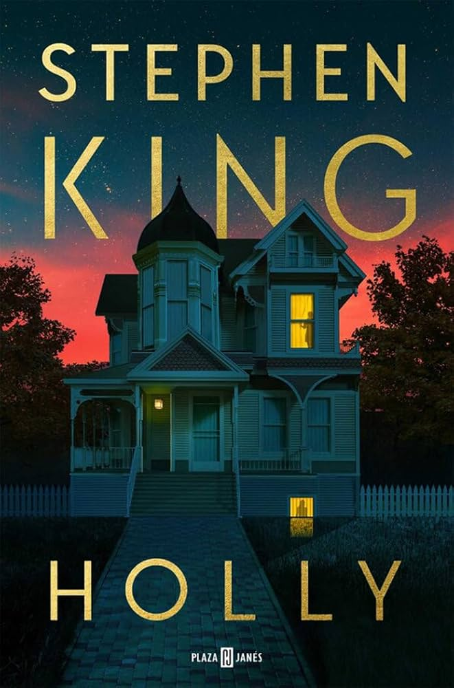

Bienvenidos a tu rincón de papel y tinta. Dicen que somos lo que leemos, y este espacio es, en realidad, un
mapa de lo eres. Aquí no solo encontrarás títulos y autores; verás las historias que han construido en la
sección de Leídos, y los tesoros que, por su magia, me siento obligada a
compartir contigo en Recomendados.
Pero una biblioteca personal nunca
está completa, por eso también comparto los Esperados; esos libros que
todavía llaman la atención desde los escaparates y que se sueña con añadir pronto a nuestra propia
estantería. Y, con total honestidad, también abro las puertas al Cementerio, porque parte de ser lector es reconocer que no todas las
historias son para nosotros, y que abandonar un libro es también una forma de respeto hacia nuestra propia
lectura. Pasa, ponte cómoda y descubre conmigo tu próximo capítulo.

El conde Drácula viaja a Inglaterra para propagar su maldición, pero es perseguido y derrotado por un grupo que combina fe y ciencia.
5 / 5 ⭐

Esta antología reúne los relatos más inquietantes de Poe, donde el terror psicológico, la culpa y la muerte acechan a protagonistas atrapados en sus propias pesadillas.
5 / 5 ⭐

Holly Gibney se enfrenta a una pareja de respetables profesores jubilados que esconden un secreto atroz tras una serie de desapariciones en su vecindad.
4 / 5 ⭐